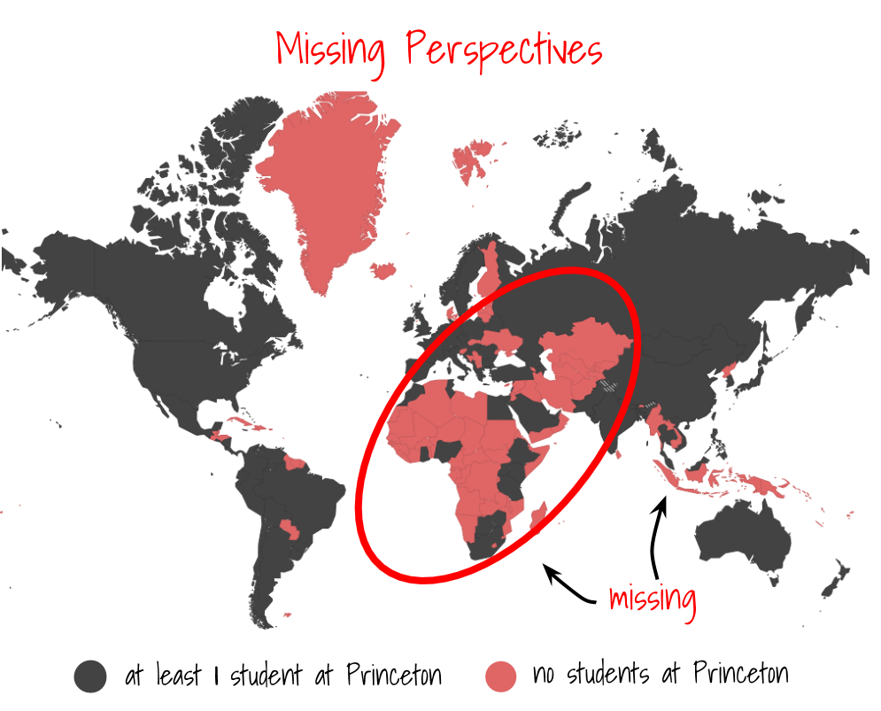
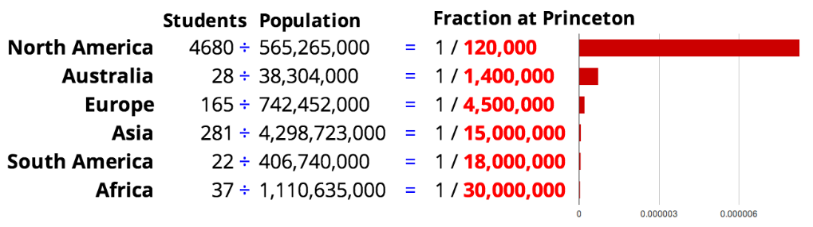
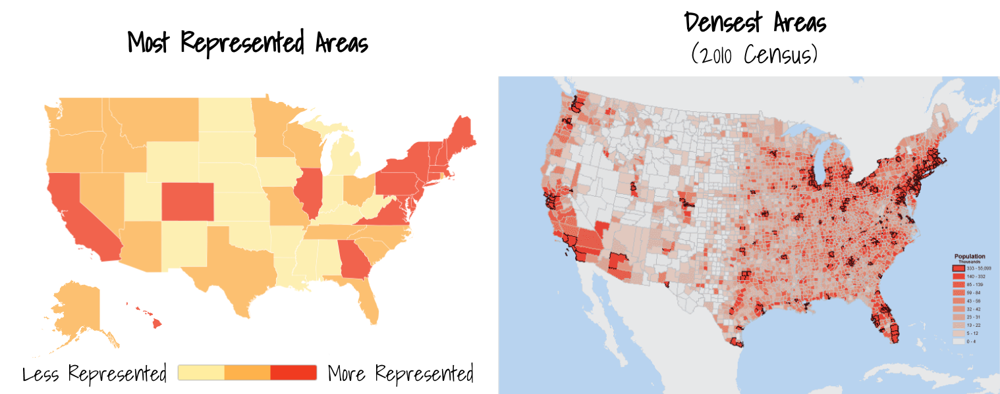

Princeton publishes a list of undergraduates (the College Facebook), which any undergraduate can access. For each listing, you can see a profile with name, year, and basic information. I scraped this info for 5224 students, which is all but a handful of the 5,264 undergraduates at Princeton.
Exploring this, I found some interesting and suprising things about Princeton. I started by looking at the locations every person said they are from. For everyone, this gave a city, state, and country.
To start with, here's a map of Princeton![1] Every undergraduate has a dot for their listed hometown:
While the map above looks pretty cool, it's easy to see that this isn't an even distribution at all. There's of course a huge emphasis on the US, and there are parts of the world that don't have anyone here. There's a whole oval missing from the Princeton international community:

We can quantify this distribution a little better. All things being equal, we would expect the number of students from a region at Princeton to be proportional to population of that region. (Basically, if region A had double the population as region B, we would expect twice as many students at Princeton from A.) Obviously, this is not the case.
We can get an idea of how well-represented a place is at Princeton by dividing the number of students at Princeton by the total population.
For instance, let's take a look at representation by continent:

Source: Wikipedia
Basically, Australia is proportionally represented 20 times more at Princeton than Africa. If the United States was represented the same way Africa is, there would be 10 Americans at Princeton. (Of course, this is due to a range of factors, not least of which is English-speaking ability).
The distribution gap is further stratified if we look at individual countries. The College Facebook indicates that there is an average of 8 Princeton undergraduates representing each of 85 countries (excluding the US). Using the same method as above, we can see which ones are the most and least proportionally represented.
 See the full list here. (Source) Credit to Luke Cheng '14 for coming up with a global heat map using the absolute numbers of students in Princeton (disregarding population).
See the full list here. (Source) Credit to Luke Cheng '14 for coming up with a global heat map using the absolute numbers of students in Princeton (disregarding population).
Whoa--the US isn't actually the most represented proportionally! Even if it's only one person, Monaco wins out. (Monaco has the highest per capita GDP in the world.) Other tiny, rich countries like Bermuda, Qatar, Singapore, Brunei and Hong Kong also top out the list.
Of course, this is due to a range of factors. Wealth, academic excellence, and English-speaking ability are all tied together.
The least proportionally represented countries are large, poorer countries like China, India, Bangladesh, and Egypt. Qatar and Brazil both have five students at Princeton, though Brazil is 100 times larger.
Lastly, we can do the same analysis by state. This eliminates murky international relations and the effect of English-speaking ability, and we have data for every single state.
Crunching the numbers, the regional bias is extreme. :
The range is huge--Qatar, Singapore, and Hong Kong are all better proportionally better represented than the bottom 10 states. The top 13 countries are all better represented than North Dakota! To better see the regional differences, here's a map dividing states into three categories:
The regions are strikingly clear. The Northeast is well-represented at Princeton, while the Midwest is in comparision neglected. The Pacific coast and South both show moderate representation.
Among other factors, this is a symptom of an urban bias at Princeton -- this map corresponds very well to a map of the most urban areas of the US:[2]

These results display some huge differences in the proportion of students across states, countries, and continents.[3] While it may look like the blame falls on Princeton University, it's important to note that the admissions office considers all these factors and more, and often the cause of these problems is rooted in other, deeper problems, such as poor educational systems and wealth gaps. When looking to fix the representation gap, it's these issues that we must look to address.
[1] Check out a similar map for the Class of 2017 by the Daily Princetonian!
[2] Credit to Azza Cohen '16 for pointing this out!
[3] Dalia Katan '15 points out that population considerations could have taken into account age distribution (i.e., two countries with the same size can have very different college-age populations).
Students and hometowns from the Princeton College Facebook; maps powered by Google Maps and CartoDB; data analyzed with Excel.
© Dec 2013